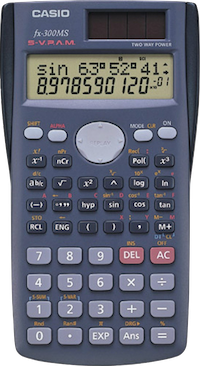
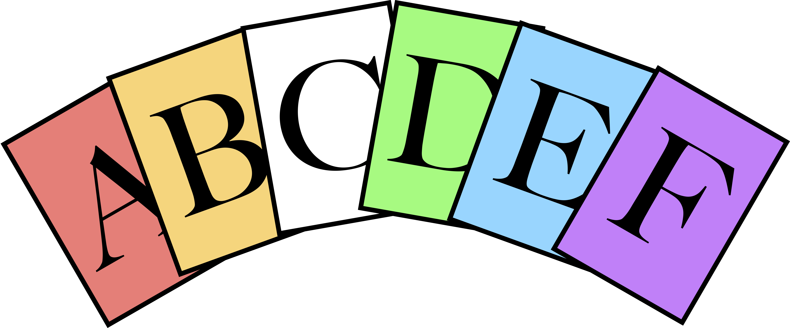

Physics 101
Introductory Physics
Fall 2016
MWF 10-10:50am in Peelle 207
Scott A. Hill

Assistant Professor of
Physics
Ph.D., University of Chicago, 2002
- Email
- shill@adrian.edu
- Instant
Messaging - doogadgit (AIM)
physhill (Google
Chat)
567-343-2284 (SMS)
- Phone
- (517) 265-5161 x4578
- Office Location
- Peelle 208
- Office Hours
- Mondays and Fridays 11am-noon
Tuesdays
and Thursdays 1-2pm
or by appointment
This two-semester course sequence is an algebra-based survey of
physics. Topics include mechanics, thermodynamics, electricity, and
magnetism, and modern physics. (Catalog)
In this first semester, we will discuss kinematics (how things
move), forces (why things move), momentum, energy, oscillations,
thermodynamics, and fluids.
MATH 115: (Pre-Calculus Mathematics)
You are expected to be comfortable with solving algebraic equations
and working with trigonometric functions.
You must also be enrolled in one section of PHYS 103 (the corresponding lab course).
On successful completion of this course, you will be able to do the
following:
Kinematics
- Draw diagrams and graphs characterizing the motion of objects,
and identify the velocity and acceleration during their motion.
- Solve kinematics equations in one and two dimensions when the
acceleration is constant, and for rotating object.
- Describe the motion of a rotational object using angular
kinematic terms, and explain the relationship between angular and
linear motion.
Forces
- Identify different types of forces.
- Explain Newton's Three Laws of motion.
- Draw a free-body diagram of the forces acting on an object.
- Identify the force pairs involved in Newton's 3rd Law.
- Calculate the torque on an object associated with a given force.
- Solve for forces under conditions of static equilibrium,
and when an object moves at constant velocity or constant
acceleration.
Momentum and Energy
- Use conservation of momentum and energy to determine the
behavior of objects.
- Explain the relationship between work, force, momentum, and energy.
Thermodynamics
- Describe the microscopic model of the ideal gas, and how it
gives rise to the phenomena of pressure and temperature.
- Describe different types of processes that ideal gases may
undergo, and calculate the change in thermodynamic variables during
these processes.
- Describe the relationship between heat, work, and temperature.
- Relate the heat flow between objects to changes in their
temperature.
- List and describe three different forms of heat.
- Define entropy.
- Explain some consequences of the Second Law of Thermodynamics.
Fluids
- Solve problems involving differences in pressure.
- Determine the buoyant force on an object submerged in a fluid.
- Determine the rates of flow in a pipe due to the equation of
continuity.
- Use Bernoulli's equation to relate pressure and the flow speed
of a fluid.
Textbook
 College Physics: A Strategic Approach
College Physics: A Strategic Approach, 3rd edition, by Knight,
Jones, and Field (2014). ISBN 0-13-416783-X. You will also need an
access code for the online homework system
Mastering Physics. Once you have logged on, you can enter the code "ADRIANPHYSICS101HILL16" to join the course.
The college bookstore lists a
hardcover version and an ebook version; you do not need both!
Calculator

A scientific calculator is required. It must have the trigonometric
functions and scientific notation; it need not (but can) be a
graphing calculator. Bring your calculator to all classes and
exams, unless otherwise notified. Needless to say, you may not
share calculators during exams, or use a cell phone, laptop, or
similar device during exams.
Letter Cards

At the beginning of the semester, you will be supplied with a set of
6 large color cards labelled A through F. You will use them to
answer multiple-choice questions in class. Please bring them with
you to every lecture.
Class assignments, solutions, and news will be posted
on the
class website:
http://101.scotthill.us
I will post audio recordings of lectures online, and use a
virtual whiteboard which can be saved to the website as well. These
are for your convenience when you cannot make it to lecture; they are
not meant to be a substitute for regular lecture attendance.
Occasionally there is a technical difficulty which prevents the notes
from a class from being posted, and you are still responsible for the
material covered in that lecture, so don't become too reliant on the
online notes.
Homework (20%)
Homework will be assigned online each week through the Mastering
Physics system, and will be due by Saturday morning at
noon. The two lowest homework grades will be dropped.
Quizzes (20%)
Weekly ten-minute quizzes will be given at the beginning of class on most
Wednesdays, on material covered since the previous quiz.
Quizzes cannot be made up, though they may be excused for valid
reason (see "Excused Absences" under
Policies.). The two lowest quiz grades will be dropped.
Quizzes will consist of 6 questions, each worth one point, and you get 4
points just for showing up.
Midterms (2 x 20%)
Two midterms will be given in class. They are closed-book and
closed-notes, but students are permitted one sheet of paper, on
which they may write or print or type or draw anything they choose,
front and back. Calculators are permitted (nay, required). The
exact dates are to be determined. Midterm dates are flexible, and
if you have a big exam or project in another class, we can talk
about how to avoid it. The first midterm will be no sooner than
September 26th, and the second midterm will be no sooner than
October 31st.
Final Exam (20%):
The final exam will be comprehensive,
with an emphasis on the material not covered on the previous two
exams. The rules are the same as for the midterms except that you
are permitted two sheets of paper.
Grade Scale
The minimum percentage
required for each letter grade; do not assume that grades are
rounded up.
|
| B+ | 87%
| C+ | 77%
| D+ | 67%
|
| A | 92%
| B | 82%
| C | 72%
| D | 62%
|
| A- | 90%
| B- | 80%
| C- | 70%
| D- | 60%
|
Grade Scale
| To get a grade of |
A | B | C | D |
| A-
| B+ | | B-
| C+ | | C-
| D+ | | D-
|
| You need at least... | 92% | 90%
| 88% | 82% | 80%
| 78% | 72% | 70%
| 68% | 62% | 60%
|
| Do not assume that grades are rounded up. |
Typically, a quiz that isn't completed in time will
receive a zero (possibly counting as one of the "dropped"
assignments for each category). The exception is when you miss
class due to an
excused absence.
How can I qualify for an excused absence?
- Have a good reason for your absence.
- Contact me before the missed class begins, unless
this is demonstrably impossible. Contact should be via written
note, email, telephone, SMS, IM, etc. Simply telling me during
class is not sufficient, because I will forget. You are
responsible for failed communication (wrong number, lost email,
etc). The sooner you let me know, the better.
- Within a week after returning to class, you must provide the
instructor with some sort of documentation for your absence: a
doctor's note, an athletic calendar, etc. If you're not sure what
qualifies as documentation, we will work something out.
What qualifies as a "good" reason?
They generally fall into one of four categories:
- personal emergencies (illness, death in the family, etc).
- religious observances that prevent the student from attending
class
- government-mandated activities, such as jury duty or military
service
- college-sponsored activities (including athletics); note that
rehearsals and practices do not generally count as excused
absences according to college policy. If you have your schedule
of games or performances (etc), please send it to me before the
end of the first week of class.
If you're not sure if something counts, please don't hesitate to ask
me.
What happens if I get an excused absence?
- For quizzes, it will be as if that quiz never existed
for you. It will not count as one of your dropped
quizzes. I do not give makeup quizzes because the quiz solutions
are posted almost immediately after class. (An exception may be
made if a large number of quizzes are missed, at my discretion.)
- For exams, we will schedule a makeup exam in my office
as soon as possible. This will either be in written or oral form,
at my discretion.
What if I'm late to a quiz or exam?
Come anyway! It's a lot easier to give you a little extra time,
than to find a whole extra hour to squeeze you in.
Do I have to let you know if I'm going to miss a class and there's no quiz or exam that day?
No; attendance is not required. I trust you to choose your own
priorities.
You didn't mention homework!
Because homework is done online, the only absences that will matter
are those that involve an extended illness or activity. Please
consult me in such a case. The homework system is set up to accept
late homework with a 20% penalty per day late. Just because the
homework is
due on Saturday morning doesn't mean you should
wait until Saturday morning to do it, particularly if you plan to be
up late Friday night.
We will cover the following chapters from the textbook.
- Weeks 1-2 Kinematics (Chapters 1-3)
- Weeks 3-5 Forces (Chapters 4-5)
- MIDTERM 1 will cover Chapters 1-5
- Weeks 6-7 Equilibrium and Rotational Motion (Chapters 6-8)
- Weeks 8 Momentum (Chapter 9)
- Weeks 9-11 Energy and Work (Chapter 10)
- MIDTERM 2 will cover Chapters 6-10
- Week 11-12 Oscillations (Chapters 14)
- Weeks 12-13 Thermodynamics (Chapters 11-12)
- Weeks 13-15 Fluids (Chapter 13)
Adrian College provides students with
free tutoring. To request a tutor, contact Lonnie Pugh at lpugh@adrian.edu.
Academic Accommodations
If you have a disability, which may affect your performance in class,
let me know as soon as possible. Students with disabilities must
self-advocate. You will need to provide recent, appropriate
documentation, which verifies the need for reasonable academic
accommodation. A copy of all documents is retained by Danielle Ward in
the Office of Academic Services (Jones Hall). Email Danielle at
dward@adrian.edu or ask for her in Academic Services. (Statement used
with permission)
Academic Integrity
Cheating of any kind is a violation of the college’s Academic
Integrity Policy (See Student Handbook). For example, if a student
plagiarizes by copying the work of another person with the intention
of deceptively representing that work as his or her own, the student
will receive a zero for that assignment. The Assistant Dean of
Student Affairs will be informed and it will be noted on the
student’s permanent record. A second offense may result in failure
of the course.
It is permissible to discuss the online homework assignments with
other students; however, when you sit down at the website, the work
you do must be your own. Exams and quizzes are to be completed with no assistance from
anyone else.
Technology in the Classroom
You are permitted to use laptops, tablets, cellphones, etc (hereafter
referred to as "tech") during lectures, with the following caveats.
- Your tech must not bother anyone else. Turn off the volume, and
make sure your screen isn't bothering or distracting anyone sitting
behind you.
- No tech is allowed during quizzes or exams (except calculators
in the latter case). This includes headphones: no personal
soundtrack during exams.
- If I ask you to work with other students, refrain from checking
texts, email, etc, while you talk with them: that's just common courtesy.
- If you're busily working on a paper for another class and just
want to sit in my class so that maybe you'll absorb information via
osmosis--well, I've been there. In that case, though, I'd
appreciate your sitting in the back of the classroom, and giving me
some warning so I won't try to get your attention. Please don't
make it a habit.
- Do not overestimate your ability to multitask. Studies
show that humans are generally a lot worse at it than we think. If
you have a laptop or phone out, you're going to feel tempted to surf
the web or text a friend "just for a minute", and soon you've
completely forgotten about the class. I've been there, too. Be
aware of yourself, and if you are an impulsive type and can't resist
the allure of the Internet, put the temptation away. You're paying
big bucks to be in lecture; don't squander the opportunity.
- I reserve the right to introduce a tech ban if I feel this
policy is being abused--e.g. if everyone is buried in their
cellphones while I'm trying to talk to y'all. I'm a teacher; I like
attention. :)
Extra Credit?
There is plenty of normal credit available in class. The only extra
credit available in class is the occasional extra credit problem on
an exam or homework set. I do not accept extra credit projects, papers, etc.
Talk to Me!
I am usually on campus from 10am (or earlier) through 4:30pm, Monday through
Friday. I live in Toledo, but can be reached via email until 11pm. I receive
text messages via email, and am usually always logged into AOL
Instant Messenger; for other forms of chat it's best to email me
first to make sure I'm available.
My Facebook account (if you find it) is
private, and strictly for family and such; please don't be offended if I
ignore your friend request.
If you run into difficulty with the material, if an unexpected
emergency comes up which makes it hard to come to class or complete
assignments, if you don't like the way I'm teaching: please tell me.
I will do all that I can to help, within the framework of fairness
to your fellow students. Generally speaking,
The earlier I know
about a problem, the more I can do to help.